Os músculos superficiais do compartimento anterior são:
Pronador redondo, flexor radial do carpo, palmar longo e flexor ulnar do carpo.
Todos eles se originam de um tendão comum, que surge do epicôndilo medial do úmero.
Em geral, os músculos do compartimento anterior do antebraço realizam flexão no punho e nos dedos e pronação.
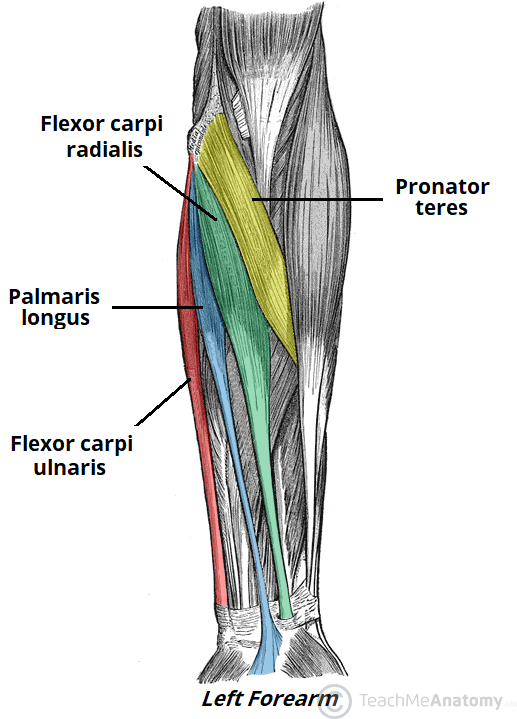
Inserção Proximal: Epicôndilo medial do úmero e processo coronóide da ulna.
Inserção Distal: Face lateral do 1/3 médio da diáfise do rádio.
Inervação: Nervo Mediano (C6 – C7).
Ação: Pronação do antebraço e auxiliar na flexão do cotovelo.
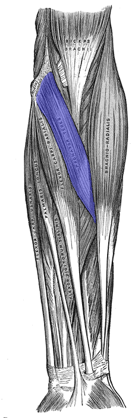
Inserção Proximal: Epicôndilo medial (epitróclea).
Inserção Distal: Face anterior do 2º metacarpal.
Inervação: Nervo Mediano (C6 e C7).
Ação: Flexão do punho e abdução da mão (desvio radial).
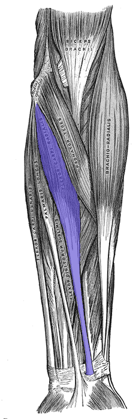
Inserção Proximal: Epicôndilo medial.
Inserção Distal: Aponeurose palmar e retináculo dos flexores.
Inervação: Nervo Mediano (C6 – C8).
Ação: Flexão do punho, tensão da aponeurose palmar e retináculo dos flexores.
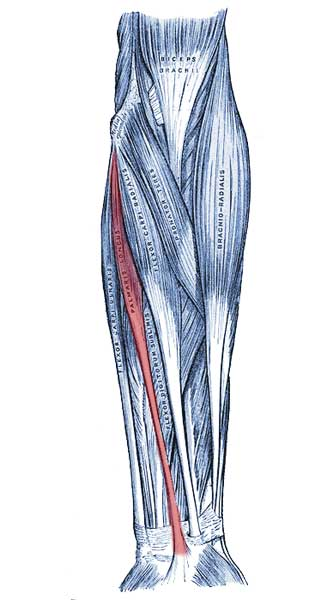
Inserção Proximal: Epicôndilo medial e olécrano.
Inserção Distal: Osso pisiforme, hamato e 5º metacarpal.
Inervação: Nervo Ulnar (C7 – T1).
Ação: Flexão de punho e adução da mão (desvio ulnar).
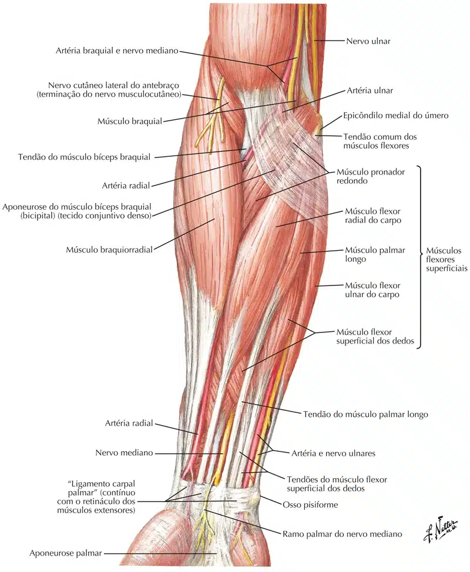
O flexor superficial dos dedos é o único músculo do compartimento intermediário.
Por vezes, pode ser classificada como um músculo superficial, mas na maioria dos cadáveres encontra-se entre as camadas musculares profundas e superficiais.
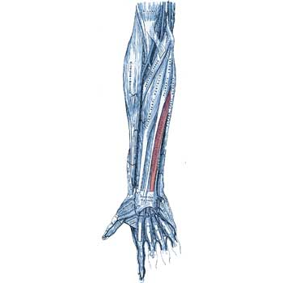
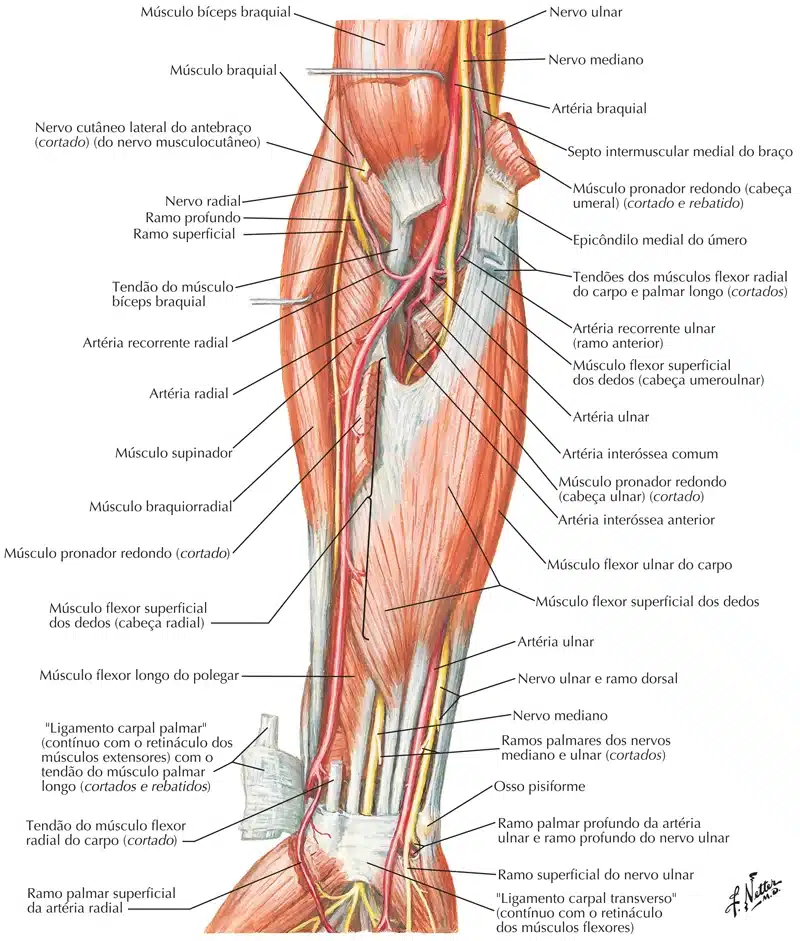
Existem três músculos na camada profunda do antebraço:
Flexor profundo dos dedos, flexor longo do polegar e pronador quadrado.
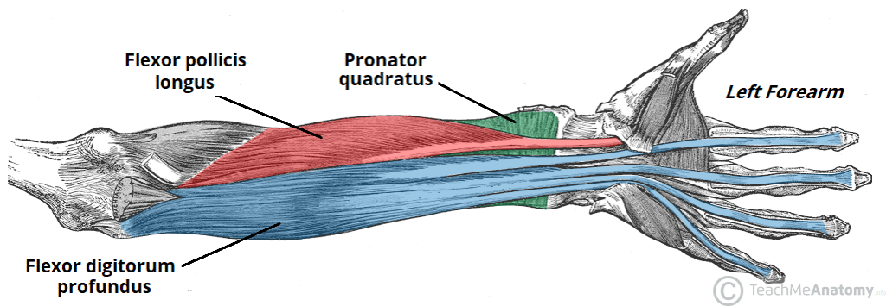
Inserção Proximal: Face anterior dos ¾ proximais da ulna e do rádio e membrana interóssea.
Inserção Distal: Face anterior da falange distal do 2º ao 5º dedos.
Inervação: Nervo Mediano (C8 – T1): 2º e 3º dedos. Nervo Ulnar (C8 – T1): 4º e 5º dedos.
Ação: Flexão de punho, IFP e IFD do 2º,3°,4° e 5º dedos.
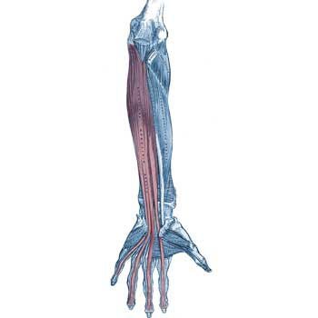
Inserção Proximal: Face anterior do rádio, membrana interóssea, processo coronóide da ulna e epicôndilo medial do úmero.
Inserção Distal: Falange distal do polegar.
Inervação: Nervo Mediano (C8 e T1).
Ação: Flexão da IF do polegar.
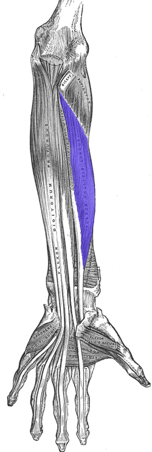
Inserção Proximal: ¼ da face anterior da ulna.
Inserção Distal: ¼ da face anterior do rádio.
Inervação: Nervo Mediano (C8).
Ação: Pronação.
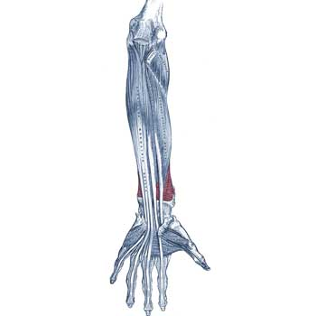
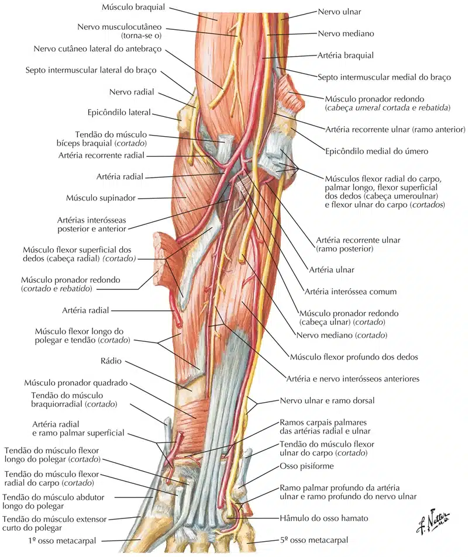
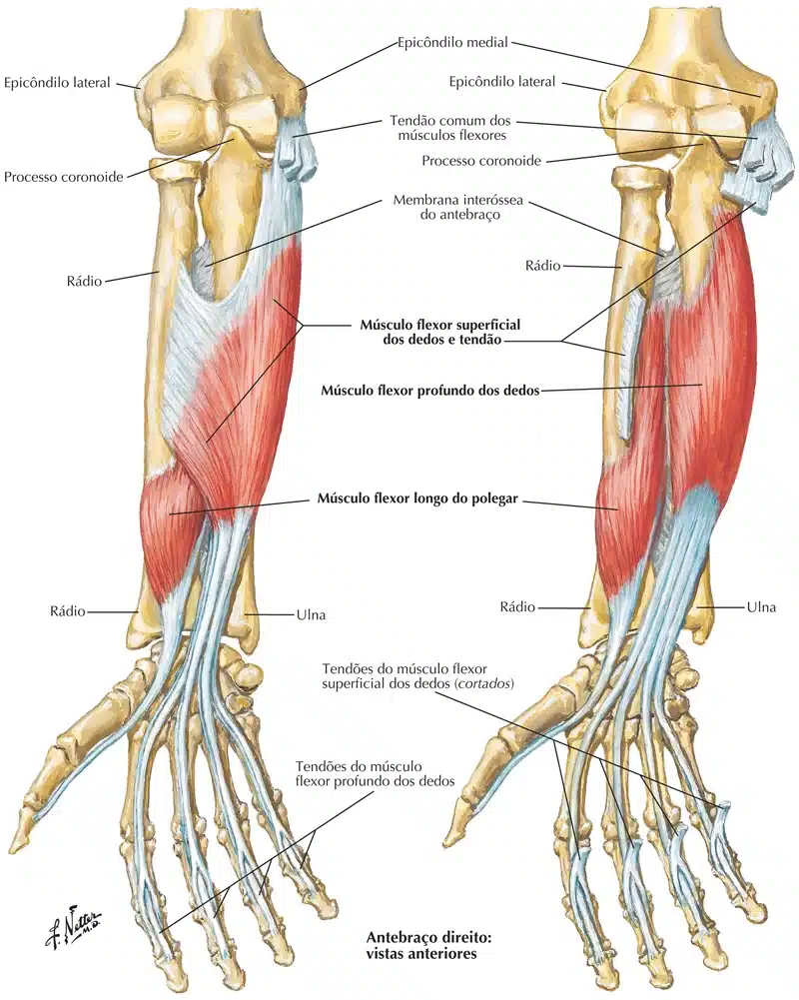
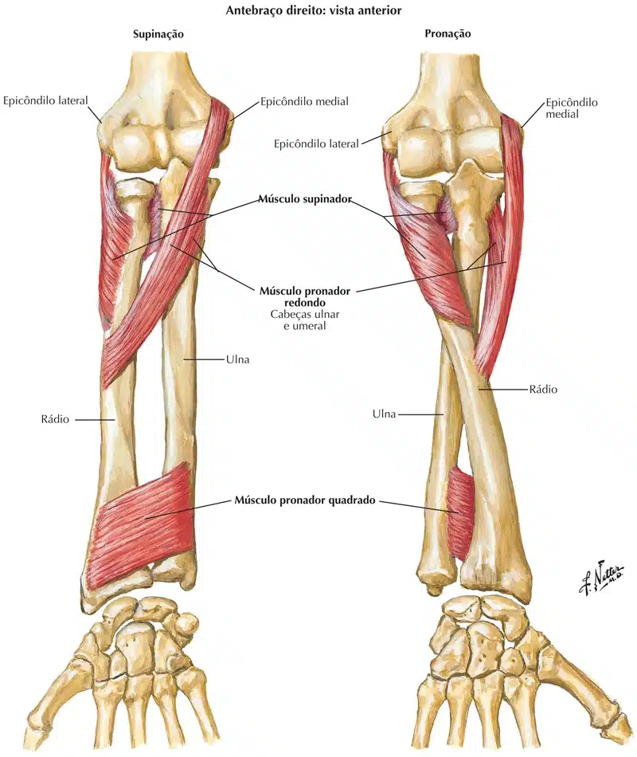
São separados em laterais:
Braquiorradial, extensor radial longo do carpo e extensor radial curto do carpo.
E posteriores:
Extensor dos dedos, extensor do 5º dedo, extensor ulnar do carpo, abdutor longo do polegar,extensor curto do polegar, extensor longo do polegar, extensor do indicador e supinador.
Os músculos do compartimento póstero-lateral do antebraço são comumente conhecidos como músculos extensores.
A função geral desses músculos é produzir extensão no punho e nos dedos.
Eles são todos inervados pelo nervo radial.
Anatomicamente, os músculos deste compartimento podem ser divididos em duas camadas: profunda e superficial.
Essas duas camadas são separadas por uma camada de fáscia.
A camada superficial posterior do antebraço contém seis músculos:
Quatro desses músculos – extensor radial curto do carpo, extensor dos dedos, extensor ulnar do carpo e extensor do mínimo têm uma origem tendinosa comum no epicôndilo lateral.
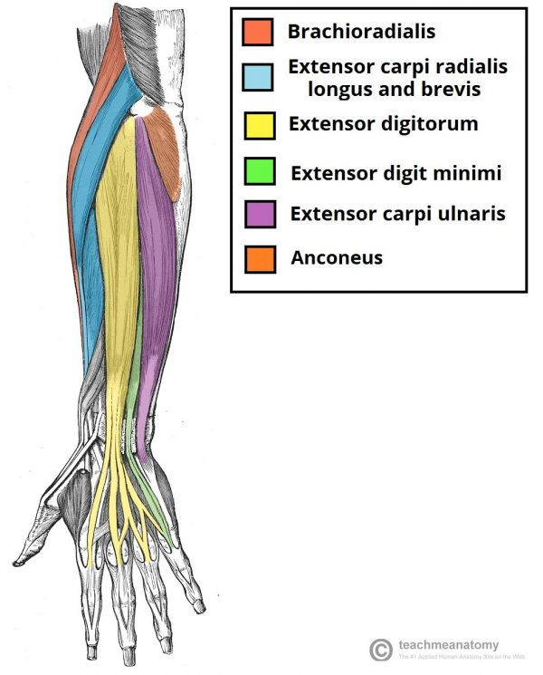
Inserção Proximal: 2/3 proximais da crista supracondiliana lateral do úmero.
Inserção Distal: Processo estilóide do rádio.
Inervação: Nervo Radial (C5 e C6).
Ação: Flexão do cotovelo, pronação de antebraço e supinação até o ponto neutro.
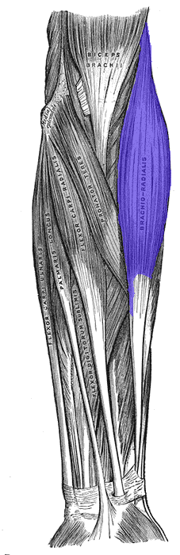
Inserção Proximal: Face lateral do 1/3 distal da crista supracondiliana do úmero.
Inserção Distal: Face posterior do 2º metacarpal.
Inervação: Nervo Radial (C6 e C7).
Ação: Extensão do punho e abdução da mão (desvio radial).
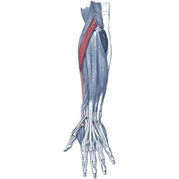
Inserção Proximal: Epicôndilo lateral do úmero.
Inserção Distal: Face posterior do 3º metacarpal.
Inervação: Nervo Radial (C7 – C8).
Ação: Extensão do punho.
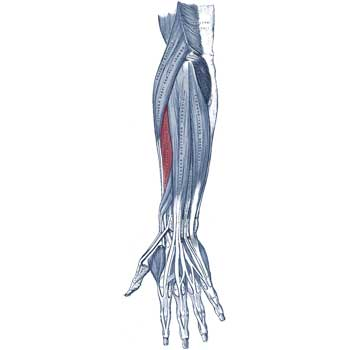
Inserção Proximal: Epicôndilo lateral do úmero.
Inserção Distal: Falanges média e distal do 2º ao 5º dedos.
Inervação: Nervo Radial (C7 – C8).
Ação: Extensão de punho, MF, IFP e IFD do 2º ao 5º dedos.
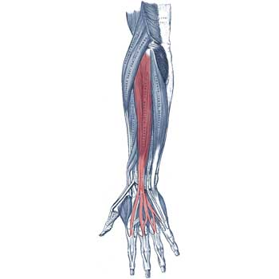
Inserção Proximal: Epicôndilo lateral do úmero.
Inserção Distal: Tendão do extensor comum para o 5º dedo.
Inervação: Nervo Radial (C7 – C8).
Ação: Extensão do 5º dedo.
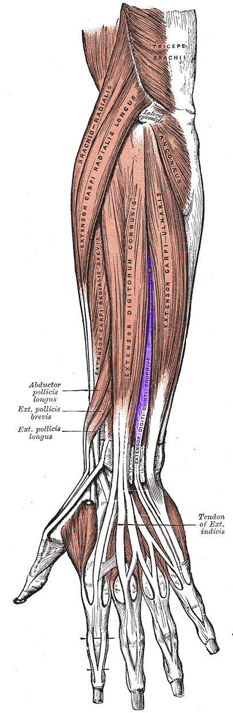
Inserção Proximal: Epicôndilo lateral do úmero.
Inserção Distal: Base do 5º metacarpal.
Inervação: Nervo Radial (C6 – C8).
Ação: Extensão do punho e adução da mão (desvio ulnar).
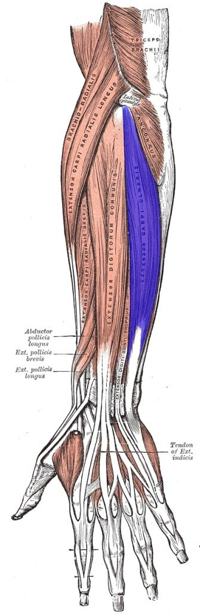
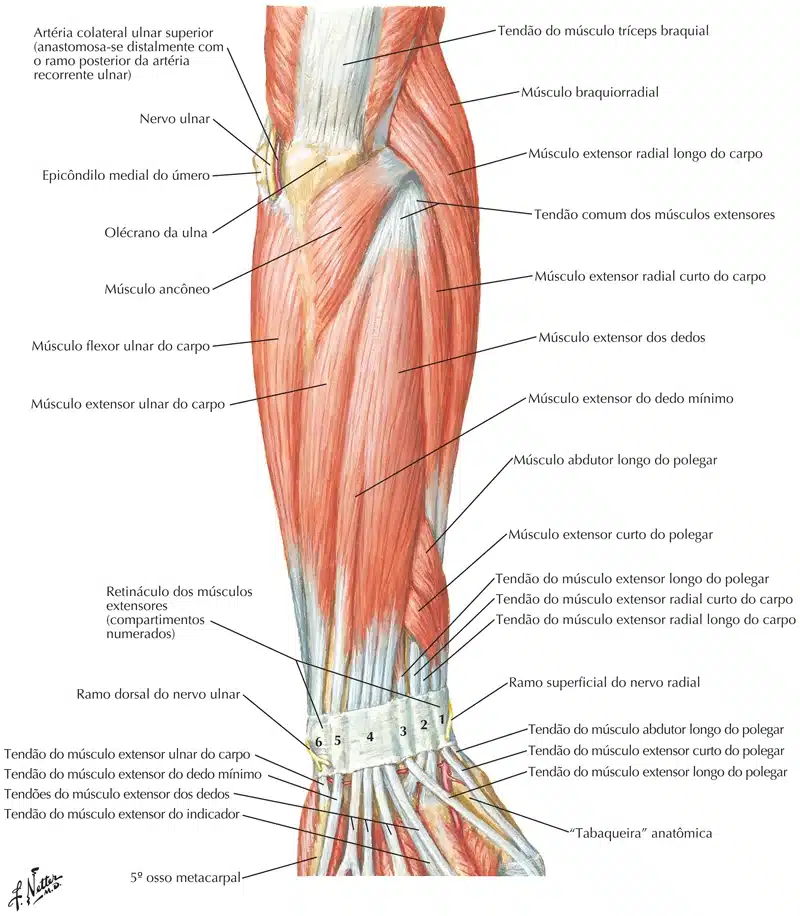
Existem cinco músculos no compartimento profundo posterior do antebraço posterior:
Supinador, abdutor longo do polegar, extensor curto do polegar, extensor longo do polegar e o extensor dos dedos.
Com exceção do supinador, esses músculos atuam no polegar e no dedo indicador.
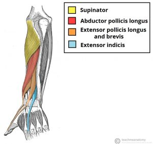
Inserção Proximal: Epicôndilo lateral do úmero e ligamento colateral radial.
Inserção Distal: Face lateral e 1/3 proximal da diáfise do rádio .
Inervação: Nervo Radial (C6 e C7).
Ação: Supinação do antebraço.
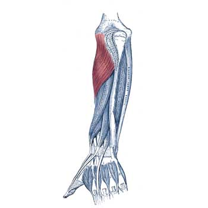
Inserção Proximal: Face posterior da diáfise da ulna e membrana interóssea.
Inserção Distal: Tendão do extensor comum do 2º dedo.
Inervação: Nervo Radial (C7 – C8).
Ação: Extensão do 2º dedo.
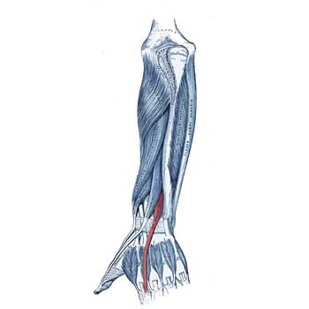
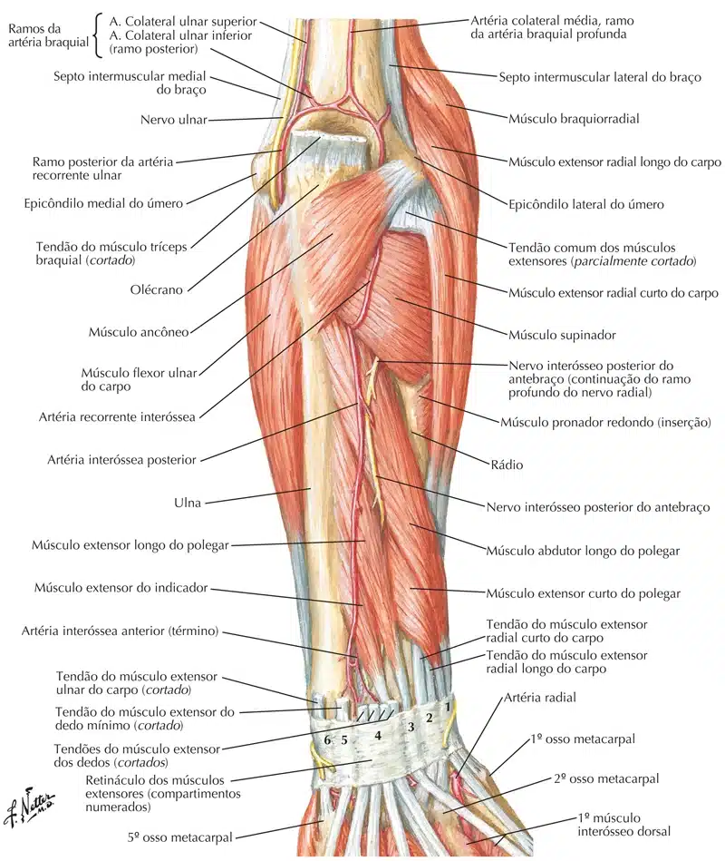
Inserção Proximal: Face posterior do rádio e da ulna e membrana interóssea.
Inserção Distal: 1ª metacarpal.
Inervação: Nervo Radial (C7 – C8).
Ação: Abdução da mão e do polegar.
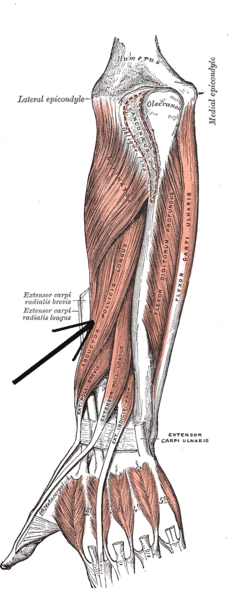
Inserção Proximal: Face posterior do 1/3 médio da ulna e
membrana interóssea.
Inserção Distal: Falange distal do polegar.
Inervação: Nervo Radial (C7 – C8).
Ação: Extensão do polegar.
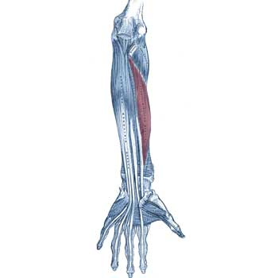
Inserção Proximal: Face posterior do rádio e membrana interóssea.
Inserção Distal: Face dorsal da falange proximal do
polegar.
Inervação: Nervo Radial (C7 – C8).
Ação: Extensão do polegar.
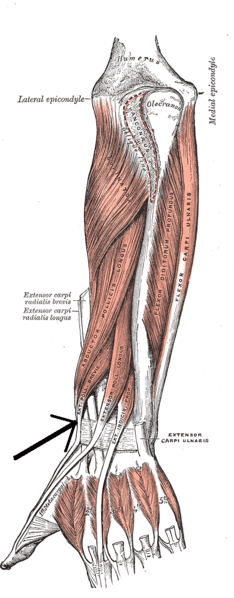
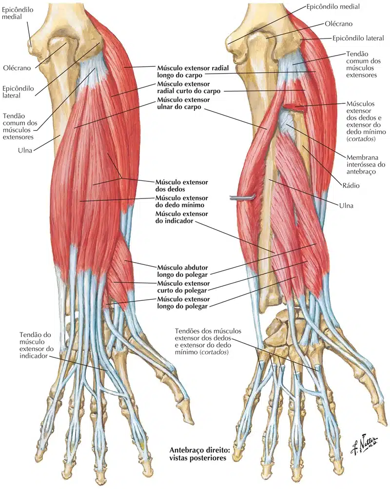
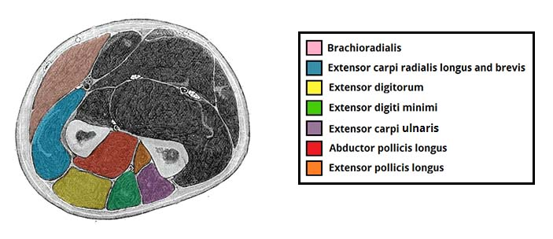